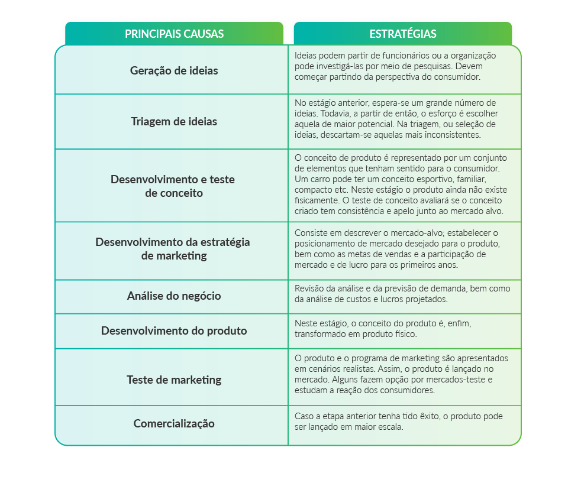

Os novos produtos, mesmo que não sejam inéditos para o consumidor, são tratados pelas empresas de maneiras diferentes de acordo com suas diversas dimensões e classificações.
Gestão de produtos
Lançamento de novos produtos
As organizações precisam estar atentas às oportunidades e ameaças. Frequentemente, os consumidores manifestam novos desejos, assim como os produtos existentes podem se tornar obsoletos. Há ainda a evolução tecnológica que pode contribuir, também, para elevar a vida dos produtos existentes.
Estas variáveis impõem às organizações a necessidade de desenvolverem novos produtos. Este processo, no entanto, é complexo, conforme veremos a seguir.
O que são novos produtos?
Para o marketing, há abordagens que representam um novo produto. Hoje em dia, quando se tem um negócio, precisamos pensar em uma forma dele crescer. Para que isso ocorra, lançar novos produtos se torna uma estratégia. Ficou curioso? Veja na videoaula abaixo quais as abordagens existentes.
O processo de desenvolvimento de novos produtos
O lançamento de novos produtos é fundamental para o êxito de qualquer organização, no entanto, não há como garantir que eles serão bem-sucedidos. Todavia, a adoção de uma metodologia pode reduzir as possibilidades de fracasso. No quadro abaixo, apresentamos o processo de desenvolvimento de novos produtos.
QUADRO 1 - Processo de desenvolvimento de novos produtos
click na imagem para dar zoom
Com base no que você viu até agora, você sabe o que leva um produto novo a ter sucesso? Continue lendo mais sobre o assunto no documento abaixo.
MOMENTO: O que é um novo produto e o que leva ao sucesso?
Fonte: CRAWFORD, Merle; DI BENEDETTO, Anthony. Gestão de novos produtos. 11 ed. Porto Alegre: AMGH, 2016.
Referências Bibliográficas
CRAWFORD, Merle; DI BENEDETTO, Anthony. Gestão de novos produtos. 11 ed. Porto Alegre: AMGH, 2016.
GOBE, Antonio Carlos. et al. Gerência de Produtos. São Paulo: Saraiva, 2004.
KOTLER, Philip; KELLER, Kevin. Administração de Marketing. 14 ed. São Paulo: Person, 2012.